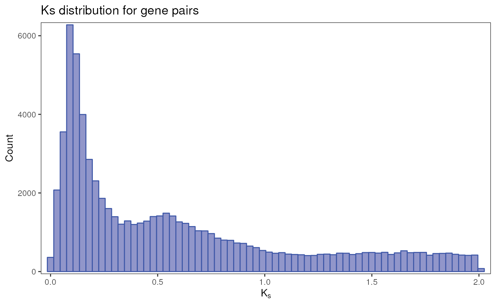
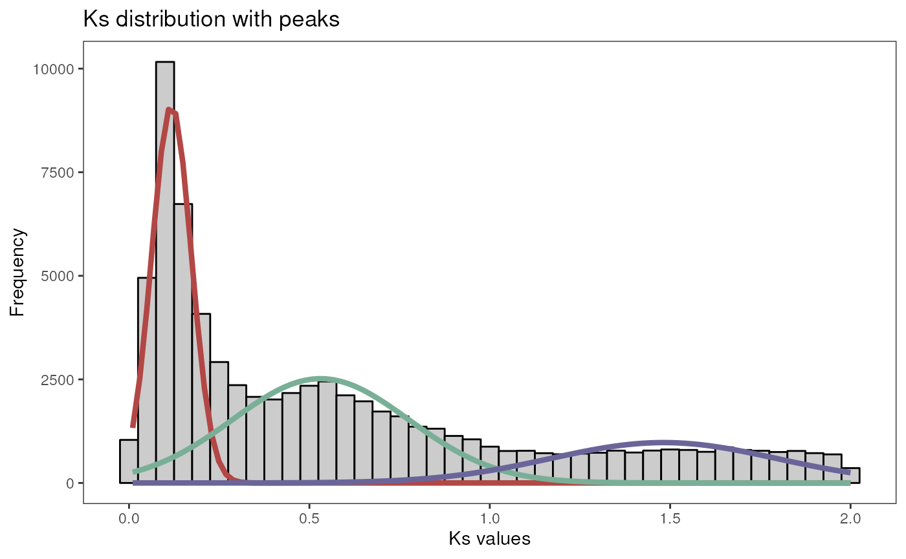
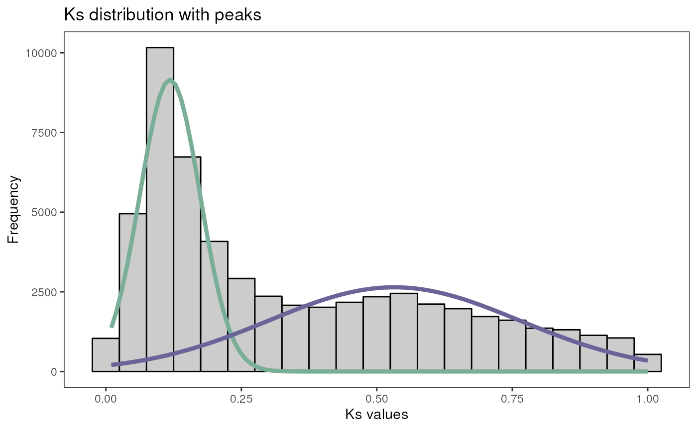

Identification and classification of duplicated genes
Fabricio Almeida-Silva
VIB-UGent Center for Plant Systems Biology, Ghent University, Ghent, Belgium
Yves Van de Peer
VIB-UGent Center for Plant Systems Biology, Ghent University, Ghent, Belgium
Source:
vignettes/doubletrouble_vignette.Rmd
doubletrouble_vignette.RmdIntroduction
Gene and genome duplications are a source of raw genetic material for evolution (Ohno 2013). However, whole-genome duplications (WGD) and small-scale duplications (SSD) contribute to genome evolution in different manners. To help you explore the different contributions of WGD and SSD to evolution, we developed doubletrouble, a package that can be used to identify and classify duplicated genes from whole-genome protein sequences, calculate substitution rates per substitution site (i.e., \(K_a\) and \(K_s\)) for gene pairs, find peaks in \(K_s\) distributions, and classify gene pairs by age groups.
Installation
You can install doubletrouble from Bioconductor with the following code:
if(!requireNamespace("BiocManager", quietly = TRUE)) {
install.packages("BiocManager")
}
BiocManager::install("doubletrouble")
## Check that you have a valid Bioconductor installation
BiocManager::valid()Then, you can load the package:
Data description
In this vignette, we will use protein sequences (primary transcripts only) and genome annotation for the yeast species Saccharomyces cerevisiae and Candida glabrata. Data were obtained from Ensembl Fungi release 54 (Yates et al. 2022).
The example data sets are stored in the following objects:
-
yeast_seq: A list of
AAStringSetobjects with elements named Scerevisiae and Cglabrata.
# Load list of DIAMOND tabular output
data(yeast_seq)
head(yeast_seq)
#> $Scerevisiae
#> AAStringSet object of length 6600:
#> width seq names
#> [1] 4910 MSQDRILLDLDVVNQRLILFNS...SELPEMLSLILRQYFTDLASS YLR106C
#> [2] 4092 MCKNEARLANELIEFVAATVTG...NYERLQAKEVASSTEQLLQEM YKR054C
#> [3] 3744 MSLTEQIEQFASRFRDDDATLQ...IGSAVSPRNLARTDVNFMPWF YHR099W
#> [4] 3268 MVLFTRCEKARKEKLAAGYKPL...ETLRGSLLLAINEGHEGFGLA YDR457W
#> [5] 3144 MLESLAANLLNRLLGSYVENFD...SLYRNIAIAVREYNKYCEAIL YLL040C
#> ... ... ...
#> [6596] 25 MFSLSNSQYTCQDYISDHIWKTSSH YOR302W
#> [6597] 25 MRAKWRKKRTRRLKRKRRKVRARSK YDL133C-A
#> [6598] 24 MHSNNSRQILIPHQNENMFLTELY YDL247W-A
#> [6599] 24 MLVLYRKRFSGFRFYFLSIFKYII YBR191W-A
#> [6600] 16 MLSLIFYLRFPSYIRG YJR151W-A
#>
#> $Cglabrata
#> AAStringSet object of length 5293:
#> width seq names
#> [1] 4880 MSIQSADTVVFDLDKAFQRRDE...VELPEMLALILRQYFSDLASQ CAGL0M11616g
#> [2] 4336 MYCIIRLCLLLLYMVRFAAAIV...ITFLGIKKCIILLIIVVVSIA CAGL0I10147g
#> [3] 4041 MVQRNIELARYITTLLIGVCPK...NDIESKVLDDTKQLLNSIEYV CAGL0K08294g
#> [4] 3743 MASADQISEYAEKLKDDQQSLA...ISASVNPRNLAKTDISFMPWF CAGL0A01914g
#> [5] 3247 MVKLTRFEKLQKEKNAEYFKPF...DTLRGSLLIAINEGHEGFGLA CAGL0K06303g
#> ... ... ...
#> [5289] 43 MLGAPISRDTPRKTRSKTQFFQGPIVSLITEKCTYEWGNPSIN CAGL0M02541g
#> [5290] 39 MLPGGPIVVLILVGLAACIIVATIIYRKWQERQRALARF CAGL0M03305g
#> [5291] 39 MLPGGVILVFILVGLAACAIVAVIIYRKWQERQRSLQRF CAGL0L08008g
#> [5292] 37 MINEGQLQTLVIGFGLAMVVLVVVYHAVASTMAVKRD CAGL0C05461g
#> [5293] 34 MQPTIEATQKDNTQEKRDNYIVKGFFWSPDCVIA CAGL0C01919g-
yeast_annot: A
GRangesListobject with elements named Scerevisiae and Cglabrata.
# Load annotation list processed with syntenet::process_input()
data(yeast_annot)
head(yeast_annot)
#> GRangesList object of length 2:
#> $Scerevisiae
#> GRanges object with 27144 ranges and 9 metadata columns:
#> seqnames ranges strand | type phase
#> <Rle> <IRanges> <Rle> | <factor> <integer>
#> [1] I 1-230218 * | chromosome <NA>
#> [2] I 335-649 + | gene <NA>
#> [3] I 335-649 + | mRNA <NA>
#> [4] I 335-649 + | exon <NA>
#> [5] I 335-649 + | CDS 0
#> ... ... ... ... . ... ...
#> [27140] XVI 944603-947701 + | CDS 0
#> [27141] XVI 946856-947338 - | gene <NA>
#> [27142] XVI 946856-947338 - | mRNA <NA>
#> [27143] XVI 946856-947338 - | exon <NA>
#> [27144] XVI 946856-947338 - | CDS 0
#> ID Parent Name
#> <character> <CharacterList> <character>
#> [1] chromosome:I <NA>
#> [2] gene:YAL069W <NA>
#> [3] transcript:YAL069W_m.. gene:YAL069W <NA>
#> [4] <NA> transcript:YAL069W_m.. YAL069W_mRNA-E1
#> [5] CDS:YAL069W transcript:YAL069W_m.. <NA>
#> ... ... ... ...
#> [27140] CDS:YPR204W transcript:YPR204W_m.. <NA>
#> [27141] gene:YPR204C-A <NA>
#> [27142] transcript:YPR204C-A.. gene:YPR204C-A <NA>
#> [27143] <NA> transcript:YPR204C-A.. YPR204C-A_mRNA-E1
#> [27144] CDS:YPR204C-A transcript:YPR204C-A.. <NA>
#> gene_id transcript_id exon_id protein_id
#> <character> <character> <character> <character>
#> [1] <NA> <NA> <NA> <NA>
#> [2] YAL069W <NA> <NA> <NA>
#> [3] <NA> YAL069W_mRNA <NA> <NA>
#> [4] <NA> <NA> YAL069W_mRNA-E1 <NA>
#> [5] <NA> <NA> <NA> YAL069W
#> ... ... ... ... ...
#> [27140] <NA> <NA> <NA> YPR204W
#> [27141] YPR204C-A <NA> <NA> <NA>
#> [27142] <NA> YPR204C-A_mRNA <NA> <NA>
#> [27143] <NA> <NA> YPR204C-A_mRNA-E1 <NA>
#> [27144] <NA> <NA> <NA> YPR204C-A
#> -------
#> seqinfo: 31 sequences from an unspecified genome; no seqlengths
#>
#> $Cglabrata
#> GRanges object with 31671 ranges and 9 metadata columns:
#> seqnames ranges strand | type phase
#> <Rle> <IRanges> <Rle> | <factor> <integer>
#> [1] ChrA_C_glabrata_CBS138 1-491328 * | region <NA>
#> [2] ChrA_C_glabrata_CBS138 1608-2636 - | gene <NA>
#> [3] ChrA_C_glabrata_CBS138 1608-2636 - | mRNA <NA>
#> [4] ChrA_C_glabrata_CBS138 1608-2636 - | exon <NA>
#> [5] ChrA_C_glabrata_CBS138 1608-2636 - | CDS 0
#> ... ... ... ... . ... ...
#> [31667] mito_C_glabrata_CBS138 15384-16067 + | CDS 0
#> [31668] mito_C_glabrata_CBS138 16756-17565 + | gene <NA>
#> [31669] mito_C_glabrata_CBS138 16756-17565 + | mRNA <NA>
#> [31670] mito_C_glabrata_CBS138 16756-17565 + | exon <NA>
#> [31671] mito_C_glabrata_CBS138 16756-17565 + | CDS 0
#> ID Parent Name
#> <character> <CharacterList> <character>
#> [1] region:ChrA_C_glabra.. <NA>
#> [2] gene:CAGL0A00105g <NA>
#> [3] transcript:CAGL0A001.. gene:CAGL0A00105g <NA>
#> [4] <NA> transcript:CAGL0A001.. CAGL0A00105g-T-E1
#> [5] CDS:CAGL0A00105g-T-p1 transcript:CAGL0A001.. <NA>
#> ... ... ... ...
#> [31667] CDS:CaglfMp11-T-p1 transcript:CaglfMp11-T <NA>
#> [31668] gene:CaglfMp12 COX3
#> [31669] transcript:CaglfMp12-T gene:CaglfMp12 <NA>
#> [31670] <NA> transcript:CaglfMp12-T CaglfMp12-T-E1
#> [31671] CDS:CaglfMp12-T-p1 transcript:CaglfMp12-T <NA>
#> gene_id transcript_id exon_id protein_id
#> <character> <character> <character> <character>
#> [1] <NA> <NA> <NA> <NA>
#> [2] CAGL0A00105g <NA> <NA> <NA>
#> [3] <NA> CAGL0A00105g-T <NA> <NA>
#> [4] <NA> <NA> CAGL0A00105g-T-E1 <NA>
#> [5] <NA> <NA> <NA> CAGL0A00105g-T-p1
#> ... ... ... ... ...
#> [31667] <NA> <NA> <NA> CaglfMp11-T-p1
#> [31668] CaglfMp12 <NA> <NA> <NA>
#> [31669] <NA> CaglfMp12-T <NA> <NA>
#> [31670] <NA> <NA> CaglfMp12-T-E1 <NA>
#> [31671] <NA> <NA> <NA> CaglfMp12-T-p1
#> -------
#> seqinfo: 31 sequences from an unspecified genome; no seqlengthsIMPORTANT: If you have protein sequences as FASTA
files in a directory, you can read them into a list of
AAStringSet objects with the function
fasta2AAStringSetlist() from the Bioconductor package
syntenet.
Likewise, you can get a GRangesList object from GFF/GTF
files with the function gff2GRangesList(), also from syntenet.
Our goal here is to identify and classify duplicated genes in the S. cerevisiae genome. The C. glabrata genome will be used as an outgroup to identify transposed duplicates later in this vignette.
Data preparation
First of all, we need to process the list of protein sequences and
gene ranges to detect synteny with syntenet.
We will do that using the function process_input() from the
syntenet
package.
library(syntenet)
# Process input data
pdata <- process_input(yeast_seq, yeast_annot)
#> Warning in as.data.frame.factor(col, optional = optional): Direct call of
#> 'as.data.frame.factor()' is deprecated. Use 'as.data.frame.vector()' or
#> 'as.data.frame()' instead
#> Warning in as.data.frame.integer(col, optional = optional): Direct call of
#> 'as.data.frame.integer()' is deprecated. Use 'as.data.frame.vector()' or
#> 'as.data.frame()' instead
#> Warning in as.data.frame.factor(col, optional = optional): Direct call of
#> 'as.data.frame.factor()' is deprecated. Use 'as.data.frame.vector()' or
#> 'as.data.frame()' instead
#> Warning in as.data.frame.integer(col, optional = optional): Direct call of
#> 'as.data.frame.integer()' is deprecated. Use 'as.data.frame.vector()' or
#> 'as.data.frame()' instead
# Inspect the output
names(pdata)
#> [1] "seq" "annotation"
pdata$seq
#> $Scerevisiae
#> AAStringSet object of length 6600:
#> width seq names
#> [1] 4910 MSQDRILLDLDVVNQRLILFNS...SELPEMLSLILRQYFTDLASS Sce_YLR106C
#> [2] 4092 MCKNEARLANELIEFVAATVTG...NYERLQAKEVASSTEQLLQEM Sce_YKR054C
#> [3] 3744 MSLTEQIEQFASRFRDDDATLQ...IGSAVSPRNLARTDVNFMPWF Sce_YHR099W
#> [4] 3268 MVLFTRCEKARKEKLAAGYKPL...ETLRGSLLLAINEGHEGFGLA Sce_YDR457W
#> [5] 3144 MLESLAANLLNRLLGSYVENFD...SLYRNIAIAVREYNKYCEAIL Sce_YLL040C
#> ... ... ...
#> [6596] 25 MFSLSNSQYTCQDYISDHIWKTSSH Sce_YOR302W
#> [6597] 25 MRAKWRKKRTRRLKRKRRKVRARSK Sce_YDL133C-A
#> [6598] 24 MHSNNSRQILIPHQNENMFLTELY Sce_YDL247W-A
#> [6599] 24 MLVLYRKRFSGFRFYFLSIFKYII Sce_YBR191W-A
#> [6600] 16 MLSLIFYLRFPSYIRG Sce_YJR151W-A
#>
#> $Cglabrata
#> AAStringSet object of length 5293:
#> width seq names
#> [1] 4880 MSIQSADTVVFDLDKAFQRRDE...VELPEMLALILRQYFSDLASQ Cgl_CAGL0M11616g
#> [2] 4336 MYCIIRLCLLLLYMVRFAAAIV...ITFLGIKKCIILLIIVVVSIA Cgl_CAGL0I10147g
#> [3] 4041 MVQRNIELARYITTLLIGVCPK...NDIESKVLDDTKQLLNSIEYV Cgl_CAGL0K08294g
#> [4] 3743 MASADQISEYAEKLKDDQQSLA...ISASVNPRNLAKTDISFMPWF Cgl_CAGL0A01914g
#> [5] 3247 MVKLTRFEKLQKEKNAEYFKPF...DTLRGSLLIAINEGHEGFGLA Cgl_CAGL0K06303g
#> ... ... ...
#> [5289] 43 MLGAPISRDTPRKTRSKTQFFQGPIVSLITEKCTYEWGNPSIN Cgl_CAGL0M02541g
#> [5290] 39 MLPGGPIVVLILVGLAACIIVATIIYRKWQERQRALARF Cgl_CAGL0M03305g
#> [5291] 39 MLPGGVILVFILVGLAACAIVAVIIYRKWQERQRSLQRF Cgl_CAGL0L08008g
#> [5292] 37 MINEGQLQTLVIGFGLAMVVLVVVYHAVASTMAVKRD Cgl_CAGL0C05461g
#> [5293] 34 MQPTIEATQKDNTQEKRDNYIVKGFFWSPDCVIA Cgl_CAGL0C01919g
pdata$annotation
#> $Scerevisiae
#> GRanges object with 6600 ranges and 1 metadata column:
#> seqnames ranges strand | gene
#> <Rle> <IRanges> <Rle> | <character>
#> [1] Sce_I 335-649 + | Sce_YAL069W
#> [2] Sce_I 538-792 + | Sce_YAL068W-A
#> [3] Sce_I 1807-2169 - | Sce_YAL068C
#> [4] Sce_I 2480-2707 + | Sce_YAL067W-A
#> [5] Sce_I 7235-9016 - | Sce_YAL067C
#> ... ... ... ... . ...
#> [6596] Sce_XVI 939922-941136 + | Sce_YPR201W
#> [6597] Sce_XVI 943032-943896 + | Sce_YPR202W
#> [6598] Sce_XVI 943880-944188 + | Sce_YPR203W
#> [6599] Sce_XVI 944603-947701 + | Sce_YPR204W
#> [6600] Sce_XVI 946856-947338 - | Sce_YPR204C-A
#> -------
#> seqinfo: 17 sequences from an unspecified genome; no seqlengths
#>
#> $Cglabrata
#> GRanges object with 5293 ranges and 1 metadata column:
#> seqnames ranges strand | gene
#> <Rle> <IRanges> <Rle> | <character>
#> [1] Cgl_ChrA_C_glabrata_.. 1608-2636 - | Cgl_CAGL0A00105g
#> [2] Cgl_ChrA_C_glabrata_.. 2671-4809 - | Cgl_CAGL0A00116g
#> [3] Cgl_ChrA_C_glabrata_.. 11697-13042 + | Cgl_CAGL0A00132g
#> [4] Cgl_ChrA_C_glabrata_.. 14977-15886 + | Cgl_CAGL0A00154g
#> [5] Cgl_ChrA_C_glabrata_.. 17913-19017 - | Cgl_CAGL0A00165g
#> ... ... ... ... . ...
#> [5289] Cgl_mito_C_glabrata_.. 13275-13421 + | Cgl_CaglfMp08
#> [5290] Cgl_mito_C_glabrata_.. 13614-14396 + | Cgl_CaglfMp09
#> [5291] Cgl_mito_C_glabrata_.. 14631-14861 + | Cgl_CaglfMp10
#> [5292] Cgl_mito_C_glabrata_.. 15384-16067 + | Cgl_CaglfMp11
#> [5293] Cgl_mito_C_glabrata_.. 16756-17565 + | Cgl_CaglfMp12
#> -------
#> seqinfo: 14 sequences from an unspecified genome; no seqlengthsThe processed data is represented as a list with the elements
seq and annotation, each containing the
protein sequences and gene ranges for each species, respectively.
Finally, we need to perform pairwise sequence similarity searches to
identify the whole set of paralogous gene pairs. We can do this using
the function run_diamond() from the syntenet
package 1, setting
compare = "intraspecies" to perform only intraspecies
comparisons.
data(diamond_intra)
# Run DIAMOND in sensitive mode for S. cerevisiae only
if(diamond_is_installed()) {
diamond_intra <- run_diamond(
seq = pdata$seq["Scerevisiae"],
compare = "intraspecies",
outdir = file.path(tempdir(), "diamond_intra"),
... = "--sensitive"
)
}
# Inspect output
names(diamond_intra)
#> [1] "Scerevisiae_Scerevisiae"
head(diamond_intra$Scerevisiae_Scerevisiae)
#> query db perc_identity length mismatches gap_open qstart qend
#> 1 Sce_YLR106C Sce_YLR106C 100.0 4910 0 0 1 4910
#> 2 Sce_YLR106C Sce_YKR054C 22.4 420 254 19 804 1195
#> 3 Sce_YKR054C Sce_YKR054C 100.0 4092 0 0 1 4092
#> 4 Sce_YKR054C Sce_YLR106C 22.4 420 254 19 1823 2198
#> 5 Sce_YHR099W Sce_YHR099W 100.0 3744 0 0 1 3744
#> 6 Sce_YHR099W Sce_YJR066W 22.7 339 201 12 3351 3674
#> tstart tend evalue bitscore
#> 1 1 4910 0.00e+00 9095.0
#> 2 1823 2198 1.30e-06 53.1
#> 3 1 4092 0.00e+00 7940.0
#> 4 804 1195 1.09e-06 53.1
#> 5 1 3744 0.00e+00 7334.0
#> 6 2074 2366 6.46e-08 57.0And voilà ! Now that we have the DIAMOND output and the processed annotation, you can classify the duplicated genes.
Classifying duplicated gene pairs and genes
To classify duplicated gene pairs based on their modes of
duplication, you will use the function
classify_gene_pairs(). This function offers four different
classification schemes, depending on how much detail you want. The
classification schemes, along with the duplication modes they identify
and their required input, are summarized in the table below:
| Scheme | Duplication modes | Required input |
|---|---|---|
| binary | SD, SSD |
blast_list, annotation
|
| standard | SD, TD, PD, DD |
blast_list, annotation
|
| extended | SD, TD, PD, TRD, DD |
blast_list, annotation,
blast_inter
|
| full | SD, TD, PD, rTRD, dTRD, DD |
blast_list, annotation,
blast_inter, intron_counts
|
Legend: SD, segmental duplication. SSD, small-scale duplication. TD, tandem duplication. PD, proximal duplication. TRD, transposon-derived duplication. rTRD, retrotransposon-derived duplication. dTRD, DNA transposon-derived duplication. DD, dispersed duplication.
As shown in the table, the minimal input objects are:
-
blast_list: A list of data frames with DIAMOND (or
BLASTp, etc.) tabular output for intraspecies comparisons as returned by
syntenet::run_diamond(..., compare = 'intraspecies'). -
annotation: The processed annotation list (a
GRangesListobject) as returned bysyntenet::process_input().
However, if you also want to identify transposon-derived duplicates (TRD) and further classify them as retrotransposon-derived duplicates (rTRD) or DNA transposon-derived duplicates (dTRD), you will need the following objects:
-
blast_list: A list of data frames with DIAMOND (or
BLASTp, etc.) tabular output for interspecies comparisons (target
species vs an outgroup) as returned by
syntenet::run_diamond(..., compare = <comparison_data_frame>). -
intron_counts: A list of data frames with the
number of introns per gene for each species, as returned by
get_intron_counts().
Below, we demonstrate each classification scheme with examples.
The binary scheme (SD vs SSD)
The binary scheme classifies duplicates as derived from either
segmental duplications (SD) or small-scale duplications (SSD). To
identify segmental duplicates, the function
classify_gene_pairs() performs intragenome synteny
detection scans with syntenet
and classifies any detected anchor pairs as segmental duplicates. The
remaining pairs are classified as originating from small-scale
duplications.
This scheme can be used by specifying scheme = "binary"
in the function classify_gene_pairs().
# Binary scheme
c_binary <- classify_gene_pairs(
annotation = pdata$annotation,
blast_list = diamond_intra,
scheme = "binary"
)
# Inspecting the output
names(c_binary)
#> [1] "Scerevisiae"
head(c_binary$Scerevisiae)
#> dup1 dup2 type
#> 9 Sce_YDR457W Sce_YER125W SSD
#> 10 Sce_YDR457W Sce_YJR036C SSD
#> 11 Sce_YDR457W Sce_YGL141W SSD
#> 12 Sce_YDR457W Sce_YKL010C SSD
#> 15 Sce_YBR140C Sce_YOL081W SSD
#> 21 Sce_YBL088C Sce_YBR136W SSD
# How many pairs are there for each duplication mode?
table(c_binary$Scerevisiae$type)
#>
#> SD SSD
#> 342 3246The function returns a list of data frames, each containing the duplicated gene pairs and their modes of duplication for each species (here, because we have only one species, this is a list of length 1).
The standard scheme (SSD → TD, PD, DD)
Gene pairs derived from small-scale duplications can be further classified as originating from tandem duplications (TD, genes are adjacent to each other), proximal duplications (PD, genes are separated by only a few genes), or dispersed duplications (DD, duplicates that do not fit in any of the previous categories).
This is the default classification scheme in
classify_gene_pairs(), and it can be specified by setting
scheme = "standard".
# Standard scheme
c_standard <- classify_gene_pairs(
annotation = pdata$annotation,
blast_list = diamond_intra,
scheme = "standard"
)
# Inspecting the output
names(c_standard)
#> [1] "Scerevisiae"
head(c_standard$Scerevisiae)
#> dup1 dup2 type
#> 124 Sce_YGR032W Sce_YLR342W SD
#> 176 Sce_YOR396W Sce_YPL283C SD
#> 189 Sce_YJL225C Sce_YIL177C SD
#> 275 Sce_YNR031C Sce_YCR073C SD
#> 285 Sce_YOR326W Sce_YAL029C SD
#> 312 Sce_YJL222W Sce_YIL173W SD
# How many pairs are there for each duplication mode?
table(c_standard$Scerevisiae$type)
#>
#> SD TD PD DD
#> 342 42 80 3124The extended scheme (SSD → TD, PD, TRD, DD)
To find transposon-derived duplicates (TRD), the function
classify_gene_pairs() detects syntenic regions between a
target species and an outgroup species. Genes in the target species that
are in syntenic regions with the outgroup are treated as ancestral
loci. Then, if only one gene of the duplicate pair is an ancestral
locus, this duplicate pair is classified as originating from
transposon-derived duplications.
Since finding transposon-derived duplicates requires comparing a
target species with an outgroup species, you will first need to perform
a similarity search of your target species against an outgroup. You can
do this with syntenet::run_diamond(). For the parameter
compare, you will pass a 2-column data frame specifying the
comparisons to be made. 2
Here, we will identify duplicated gene pairs for Saccharomyces cerevisiae using Candida glabrata as an outgroup.
data(diamond_inter) # load pre-computed output in case DIAMOND is not installed
# Create data frame of comparisons to be made
comparisons <- data.frame(
species = "Scerevisiae",
outgroup = "Cglabrata"
)
comparisons
#> species outgroup
#> 1 Scerevisiae Cglabrata
# Run DIAMOND for the comparison we specified
if(diamond_is_installed()) {
diamond_inter <- run_diamond(
seq = pdata$seq,
compare = comparisons,
outdir = file.path(tempdir(), "diamond_inter"),
... = "--sensitive"
)
}
names(diamond_inter)
#> [1] "Scerevisiae_Cglabrata"
head(diamond_inter$Scerevisiae_Cglabrata)
#> query db perc_identity length mismatches gap_open qstart
#> 1 Sce_YLR106C Cgl_CAGL0M11616g 52.3 4989 2183 50 2
#> 2 Sce_YLR106C Cgl_CAGL0K08294g 23.1 347 215 12 1064
#> 3 Sce_YKR054C Cgl_CAGL0K08294g 26.5 4114 2753 81 83
#> 4 Sce_YKR054C Cgl_CAGL0M11616g 22.7 419 254 17 1823
#> 5 Sce_YHR099W Cgl_CAGL0A01914g 70.2 3761 1087 17 1
#> 6 Sce_YDR457W Cgl_CAGL0K06303g 55.5 3318 1355 39 1
#> qend tstart tend evalue bitscore
#> 1 4909 5 4879 0.00e+00 4439.0
#> 2 1389 1770 2085 9.10e-07 53.5
#> 3 4089 87 4035 0.00e+00 1376.0
#> 4 2198 803 1194 7.59e-07 53.5
#> 5 3744 1 3743 0.00e+00 5200.0
#> 6 3268 1 3247 0.00e+00 3302.0Now, we will pass this interspecies DIAMOND output as an argument to
the parameter blast_inter of
classify_gene_pairs().
# Extended scheme
c_extended <- classify_gene_pairs(
annotation = pdata$annotation,
blast_list = diamond_intra,
scheme = "extended",
blast_inter = diamond_inter
)
# Inspecting the output
names(c_extended)
#> [1] "Scerevisiae"
head(c_extended$Scerevisiae)
#> dup1 dup2 type
#> 124 Sce_YGR032W Sce_YLR342W SD
#> 176 Sce_YOR396W Sce_YPL283C SD
#> 189 Sce_YJL225C Sce_YIL177C SD
#> 275 Sce_YNR031C Sce_YCR073C SD
#> 285 Sce_YOR326W Sce_YAL029C SD
#> 312 Sce_YJL222W Sce_YIL173W SD
# How many pairs are there for each duplication mode?
table(c_extended$Scerevisiae$type)
#>
#> SD TD PD TRD DD
#> 342 42 80 1015 2109The full scheme (SSD → TD, PD, rTRD, dTRD, DD)
Finally, the full scheme consists in classifying transposon-derived
duplicates (TRD) further as originating from retrotransposons (rTRD) or
DNA transposons (dTRD). To do that, the function
classify_gene_pairs() uses the number of introns per gene
to find TRD pairs for which one gene has at least 1 intron, and the
other gene has no introns; if that is the case, the pair is classified
as originating from the activity of retrotransposons (rTRD, i.e., the
transposed gene without introns is a processed transcript that was
retrotransposed back to the genome). All the other TRD pairs are
classified as DNA transposon-derived duplicates (dTRD).
To classify duplicates using this scheme, you will first need to
create a list of data frames with the number of introns per gene for
each species. This can be done with the function
get_intron_counts(), which takes a TxDb object
as input. TxDb objects store transcript annotations, and
they can be created with a family of functions named
makeTxDbFrom* from the txdbmaker
package (see ?get_intron_counts() for a summary of all
functions).
Here, we will create a list of TxDb objects from a list
of GRanges objects using the function
makeTxDbFromGRanges from txdbmaker.
Importantly, to create a TxDb from a GRanges,
the GRanges object must contain genomic coordinates for all
features, including transcripts, exons, etc. Because of that, we will
use annotation from the example data set yeast_annot, which
was not processed with syntenet::process_input().
library(txdbmaker)
#> Loading required package: BiocGenerics
#>
#> Attaching package: 'BiocGenerics'
#> The following objects are masked from 'package:stats':
#>
#> IQR, mad, sd, var, xtabs
#> The following objects are masked from 'package:base':
#>
#> anyDuplicated, aperm, append, as.data.frame, basename, cbind,
#> colnames, dirname, do.call, duplicated, eval, evalq, Filter, Find,
#> get, grep, grepl, intersect, is.unsorted, lapply, Map, mapply,
#> match, mget, order, paste, pmax, pmax.int, pmin, pmin.int,
#> Position, rank, rbind, Reduce, rownames, sapply, setdiff, table,
#> tapply, union, unique, unsplit, which.max, which.min
#> Loading required package: S4Vectors
#> Loading required package: stats4
#>
#> Attaching package: 'S4Vectors'
#> The following object is masked from 'package:utils':
#>
#> findMatches
#> The following objects are masked from 'package:base':
#>
#> expand.grid, I, unname
#> Loading required package: GenomeInfoDb
#> Loading required package: IRanges
#> Loading required package: GenomicRanges
#> Loading required package: GenomicFeatures
#> Loading required package: AnnotationDbi
#> Loading required package: Biobase
#> Welcome to Bioconductor
#>
#> Vignettes contain introductory material; view with
#> 'browseVignettes()'. To cite Bioconductor, see
#> 'citation("Biobase")', and for packages 'citation("pkgname")'.
#>
#> Attaching package: 'txdbmaker'
#> The following objects are masked from 'package:GenomicFeatures':
#>
#> browseUCSCtrack, getChromInfoFromBiomart, makeFDbPackageFromUCSC,
#> makeFeatureDbFromUCSC, makePackageName, makeTxDb,
#> makeTxDbFromBiomart, makeTxDbFromEnsembl, makeTxDbFromGFF,
#> makeTxDbFromGRanges, makeTxDbFromUCSC, makeTxDbPackage,
#> makeTxDbPackageFromBiomart, makeTxDbPackageFromUCSC,
#> supportedMiRBaseBuildValues, supportedUCSCFeatureDbTables,
#> supportedUCSCFeatureDbTracks, supportedUCSCtables,
#> UCSCFeatureDbTableSchema
# Create a list of `TxDb` objects from a list of `GRanges` objects
txdb_list <- lapply(yeast_annot, txdbmaker::makeTxDbFromGRanges)
#> Warning in as.data.frame.factor(value, row.names = row.names, optional =
#> optional, : Direct call of 'as.data.frame.factor()' is deprecated. Use
#> 'as.data.frame.vector()' or 'as.data.frame()' instead
#> Warning in as.data.frame.factor(value, row.names = row.names, optional =
#> optional, : Direct call of 'as.data.frame.factor()' is deprecated. Use
#> 'as.data.frame.vector()' or 'as.data.frame()' instead
#> Warning in as.data.frame.factor(value, row.names = row.names, optional =
#> optional, : Direct call of 'as.data.frame.factor()' is deprecated. Use
#> 'as.data.frame.vector()' or 'as.data.frame()' instead
#> Warning in as.data.frame.factor(value, row.names = row.names, optional =
#> optional, : Direct call of 'as.data.frame.factor()' is deprecated. Use
#> 'as.data.frame.vector()' or 'as.data.frame()' instead
#> Warning in as.data.frame.factor(value, row.names = row.names, optional =
#> optional, : Direct call of 'as.data.frame.factor()' is deprecated. Use
#> 'as.data.frame.vector()' or 'as.data.frame()' instead
#> Warning in as.data.frame.factor(value, row.names = row.names, optional =
#> optional, : Direct call of 'as.data.frame.factor()' is deprecated. Use
#> 'as.data.frame.vector()' or 'as.data.frame()' instead
#> Warning in as.data.frame.factor(value, row.names = row.names, optional =
#> optional, : Direct call of 'as.data.frame.factor()' is deprecated. Use
#> 'as.data.frame.vector()' or 'as.data.frame()' instead
#> Warning in as.data.frame.factor(value, row.names = row.names, optional =
#> optional, : Direct call of 'as.data.frame.factor()' is deprecated. Use
#> 'as.data.frame.vector()' or 'as.data.frame()' instead
#> Warning in as.data.frame.factor(value, row.names = row.names, optional =
#> optional, : Direct call of 'as.data.frame.factor()' is deprecated. Use
#> 'as.data.frame.vector()' or 'as.data.frame()' instead
#> Warning in as.data.frame.factor(value, row.names = row.names, optional =
#> optional, : Direct call of 'as.data.frame.factor()' is deprecated. Use
#> 'as.data.frame.vector()' or 'as.data.frame()' instead
#> Warning in as.data.frame.factor(value, row.names = row.names, optional =
#> optional, : Direct call of 'as.data.frame.factor()' is deprecated. Use
#> 'as.data.frame.vector()' or 'as.data.frame()' instead
#> Warning in as.data.frame.factor(value, row.names = row.names, optional =
#> optional, : Direct call of 'as.data.frame.factor()' is deprecated. Use
#> 'as.data.frame.vector()' or 'as.data.frame()' instead
#> Warning in as.data.frame.factor(value, row.names = row.names, optional =
#> optional, : Direct call of 'as.data.frame.factor()' is deprecated. Use
#> 'as.data.frame.vector()' or 'as.data.frame()' instead
#> Warning in as.data.frame.factor(value, row.names = row.names, optional =
#> optional, : Direct call of 'as.data.frame.factor()' is deprecated. Use
#> 'as.data.frame.vector()' or 'as.data.frame()' instead
#> Warning in as.data.frame.factor(value, row.names = row.names, optional =
#> optional, : Direct call of 'as.data.frame.factor()' is deprecated. Use
#> 'as.data.frame.vector()' or 'as.data.frame()' instead
#> Warning in as.data.frame.factor(value, row.names = row.names, optional =
#> optional, : Direct call of 'as.data.frame.factor()' is deprecated. Use
#> 'as.data.frame.vector()' or 'as.data.frame()' instead
txdb_list
#> $Scerevisiae
#> TxDb object:
#> # Db type: TxDb
#> # Supporting package: GenomicFeatures
#> # Genome: NA
#> # Nb of transcripts: 6631
#> # Db created by: txdbmaker package from Bioconductor
#> # Creation time: 2024-03-20 09:25:37 +0000 (Wed, 20 Mar 2024)
#> # txdbmaker version at creation time: 0.99.6
#> # RSQLite version at creation time: 2.3.5
#> # DBSCHEMAVERSION: 1.2
#>
#> $Cglabrata
#> TxDb object:
#> # Db type: TxDb
#> # Supporting package: GenomicFeatures
#> # Genome: NA
#> # Nb of transcripts: 5389
#> # Db created by: txdbmaker package from Bioconductor
#> # Creation time: 2024-03-20 09:25:37 +0000 (Wed, 20 Mar 2024)
#> # txdbmaker version at creation time: 0.99.6
#> # RSQLite version at creation time: 2.3.5
#> # DBSCHEMAVERSION: 1.2Once we have the TxDb objects, we can get intron counts
per gene with get_intron_counts().
# Get a list of data frames with intron counts per gene for each species
intron_counts <- lapply(txdb_list, get_intron_counts)
# Inspecting the list
names(intron_counts)
#> [1] "Scerevisiae" "Cglabrata"
head(intron_counts$Scerevisiae)
#> gene introns
#> 1 Q0045 7
#> 2 Q0105 5
#> 3 Q0070 4
#> 4 Q0065 3
#> 5 Q0120 3
#> 6 Q0060 2Finally, we can use this list to classify duplicates using the full scheme as follows:
# Full scheme
c_full <- classify_gene_pairs(
annotation = pdata$annotation,
blast_list = diamond_intra,
scheme = "full",
blast_inter = diamond_inter,
intron_counts = intron_counts
)
# Inspecting the output
names(c_full)
#> [1] "Scerevisiae"
head(c_full$Scerevisiae)
#> dup1 dup2 type
#> 124 Sce_YGR032W Sce_YLR342W SD
#> 176 Sce_YOR396W Sce_YPL283C SD
#> 189 Sce_YJL225C Sce_YIL177C SD
#> 275 Sce_YNR031C Sce_YCR073C SD
#> 285 Sce_YOR326W Sce_YAL029C SD
#> 312 Sce_YJL222W Sce_YIL173W SD
# How many pairs are there for each duplication mode?
table(c_full$Scerevisiae$type)
#>
#> SD TD PD rTRD dTRD DD
#> 342 42 80 52 963 2109Classifying genes into unique modes of duplication
If you look carefully at the output of
classify_gene_pairs(), you will notice that some genes
appear in more than one duplicate pair, and these pairs can have
different duplication modes assigned. There’s nothing wrong with it.
Consider, for example, a gene that was originated by a segmental
duplication some 60 million years ago, and then it underwent a tandem
duplication 5 million years ago. In the output of
classify_gene_pairs(), you’d see this gene in two pairs,
one with SD in the type column, and one
with TD.
If you want to assign each gene to a unique mode of duplication, you
can use the function classify_genes(). This function
assigns duplication modes hierarchically using factor levels in column
type as the priority order. The priority orders for each
classification scheme are:
- Binary: SD > SSD.
- Standard: SD > TD > PD > DD.
- Extended: SD > TD > PD > TRD > DD.
- Full: SD > TD > PD > rTRD > dTRD > DD.
The input for classify_genes() is the list of gene pairs
returned by classify_gene_pairs().
# Classify genes into unique modes of duplication
c_genes <- classify_genes(c_full)
# Inspecting the output
names(c_genes)
#> [1] "Scerevisiae"
head(c_genes$Scerevisiae)
#> gene type
#> 1 Sce_YGR032W SD
#> 2 Sce_YOR396W SD
#> 3 Sce_YJL225C SD
#> 4 Sce_YNR031C SD
#> 5 Sce_YOR326W SD
#> 6 Sce_YJL222W SD
# Number of genes per mode
table(c_genes$Scerevisiae$type)
#>
#> SD TD PD rTRD dTRD DD
#> 683 67 70 71 883 836Calculating substitution rates for duplicated gene pairs
You can use the function pairs2kaks() to calculate rates
of nonsynonymous substitutions per nonsynonymous site (\(K_a\)), synonymouys substitutions per
synonymous site (\(K_s\)), and their
ratios (\(K_a/K_s\)). These rates are
calculated using the Bioconductor package MSA2dist,
which implements all codon models in KaKs_Calculator 2.0 (Wang et al. 2010).
For the purpose of demonstration, we will only calculate \(K_a\), \(K_s\), and \(K_a/K_s\) for 5 TD-derived gene pairs. The
CDS for TD-derived genes were obtained from Ensembl Fungi (Yates et al. 2022), and they are stored in
cds_scerevisiae.
data(cds_scerevisiae)
head(cds_scerevisiae)
#> DNAStringSet object of length 6:
#> width seq names
#> [1] 3486 ATGGTTAATATAAGCATCGTAGC...TTGTCGCTTTATTACTGCTATAG YJR151C
#> [2] 3276 ATGGGCGAAGGAACTACTAAGGA...TTAATATTGGTATTAAACAATGA YDR040C
#> [3] 3276 ATGAGCGAGGGAACTGTCAAAGA...TTAATATCAGTGTCAAGCATTAA YDR038C
#> [4] 3276 ATGAGCGAGGGAACTGTCAAAGA...TTAATATTGGTATTAAACAATGA YDR039C
#> [5] 2925 ATGAACAGTATGGCCGATACCGA...CCATTACAACATTTCAAACATAA YAR019C
#> [6] 2646 ATGCTGGAGTTTCCAATATCAGT...TAGCTGTTCTGTTCGCCTTCTAG YJL078C
# Store DNAStringSet object in a list
cds_list <- list(Scerevisiae = cds_scerevisiae)
# Keep only top five TD-derived gene pairs for demonstration purposes
td_pairs <- c_full$Scerevisiae[c_full$Scerevisiae$type == "TD", ]
gene_pairs <- list(Scerevisiae = td_pairs[seq(1, 5, by = 1), ])
# Calculate Ka, Ks, and Ka/Ks
kaks <- pairs2kaks(gene_pairs, cds_list)
# Inspect the output
head(kaks)
#> $Scerevisiae
#> dup1 dup2 Ka Ks Ka_Ks type
#> 1 Q0055 Q0060 NaN NaN NaN TD
#> 2 Q0065 Q0060 0.799925 3.549370 0.225371 TD
#> 3 Q0070 Q0045 0.296216 0.438575 0.675405 TD
#> 4 Q0070 Q0065 0.394617 0.582050 0.677977 TD
#> 5 Q0055 Q0050 0.629343 4.257430 0.147822 TDIdentifying and visualizing \(K_s\) peaks
Peaks in \(K_s\) distributions
typically indicate whole-genome duplication (WGD) events, and they can
be identified by fitting Gaussian mixture models (GMMs) to \(K_s\) distributions. In doubletrouble, this can
be performed with the function find_ks_peaks().
However, because of saturation at higher \(K_s\) values, only recent WGD events can be reliably identified from \(K_s\) distributions (Vanneste, Van de Peer, and Maere 2013). Recent WGD events are commonly found in plant species, such as maize, soybean, apple, etc. Although the genomes of yeast species have signatures of WGD, these events are ancient, so it is very hard to find evidence for them using \(K_s\) distributions. 3
To demonstrate how you can find peaks in \(K_s\) distributions with
find_ks_peaks(), we will use a data frame containing \(K_s\) values for duplicate pairs in the
soybean (Glycine max) genome, which has undergone 2 WGDs events
~13 and ~58 million years ago (Schmutz et al.
2010). Then, we will visualize \(K_s\) distributions with peaks using the
function plot_ks_peaks().
First of all, let’s look at the data and have a quick look at the
distribution with the function plot_ks_distro() (more
details on this function in the data visualization section).
# Load data and inspect it
data(gmax_ks)
head(gmax_ks)
#> dup1 dup2 Ks
#> 1 GLYMA_01G000100 GLYMA_15G276800 0.3750
#> 3 GLYMA_01G000400 GLYMA_02G312300 0.0453
#> 8 GLYMA_01G000600 GLYMA_14G000400 0.1040
#> 10 GLYMA_01G000800 GLYMA_03G188200 0.4730
#> 11 GLYMA_01G000800 GLYMA_05G115300 1.2300
#> 12 GLYMA_01G000800 GLYMA_17G191100 1.6600
# Plot distribution
plot_ks_distro(gmax_ks)
By visual inspection, we can see 2 or 3 peaks. Based on our prior knowledge, we know that 2 WGD events have occurred in the ancestral of the Glycine genus and in the ancestral of all Fabaceae, which seem to correspond to the peaks we see at \(K_s\) values around 0.1 and 0.5, respectively. There could be a third, flattened peak at around 1.6, which would represent the WGD shared by all eudicots. Let’s test which number of peaks has more support: 2 or 3.
# Find 2 and 3 peaks and test which one has more support
peaks <- find_ks_peaks(gmax_ks$Ks, npeaks = c(2, 3), verbose = TRUE)
#> Optimal number of peaks: 3
#> Bayesian Information Criterion (BIC):
#> E V
#> 2 -86950.22 -67759.47
#> 3 -86977.45 -54202.14
#>
#> Top 3 models based on the BIC criterion:
#> V,3 V,2 E,2
#> -54202.14 -67759.47 -86950.22
names(peaks)
#> [1] "mean" "sd" "lambda" "ks"
str(peaks)
#> List of 4
#> $ mean : Named num [1:3] 0.118 0.531 1.482
#> ..- attr(*, "names")= chr [1:3] "1" "2" "3"
#> $ sd : num [1:3] 0.0549 0.2443 0.3133
#> $ lambda: num [1:3] 0.352 0.433 0.215
#> $ ks : num [1:71232] 0.375 0.0453 0.104 0.473 1.23 1.66 1.72 0.13 0.0856 1.96 ...
# Visualize Ks distribution
plot_ks_peaks(peaks)
As we can see, the presence of 3 peaks is more supported (lowest BIC). The function returns a list with the mean, variance and amplitude of mixture components (i.e., peaks), as well as the \(K_s\) distribution itself.
Now, suppose you just want to get the first 2 peaks. You can do that
by explictly saying to find_ks_peaks() how many peaks there
are.
# Find 2 peaks ignoring Ks values > 1
peaks <- find_ks_peaks(gmax_ks$Ks, npeaks = 2, max_ks = 1)
plot_ks_peaks(peaks)
Important consideration on GMMs and \(K_s\) distributions: Peaks identified with GMMs should not be blindly regarded as “the truth”. Using GMMs to find peaks in \(K_s\) distributions can lead to problems such as overfitting and overclustering (Tiley, Barker, and Burleigh 2018). Some general recommendations are:
Use your prior knowledge. If you know how many peaks there are (e.g., based on literature evidence), just tell the number to
find_ks_peaks(). Likewise, if you are not sure about how many peaks there are, but you know the maximum number of peaks is N, don’t test for the presence of >N peaks. GMMs can incorrectly identify more peaks than the actual number.Test the significance of each peak with SiZer (Significant ZERo crossings of derivatives) maps (Chaudhuri and Marron 1999). This can be done with the function
SiZer()from the R package feature.
As an example of a SiZer map, let’s use feature::SiZer()
to assess the significance of the 2 peaks we found previously.
# Get numeric vector of Ks values <= 1
ks <- gmax_ks$Ks[gmax_ks$Ks <= 1]
# Get SiZer map
feature::SiZer(ks)
#> Warning: no DISPLAY variable so Tk is not availableThe blue regions in the SiZer map indicate significantly increasing regions of the curve, which support the 2 peaks we found.
Classifying genes by age groups
Finally, you can use the peaks you obtained before to classify gene
pairs by age group. Age groups are defined based on the \(K_s\) peak to which pairs belong. This is
useful if you want to analyze duplicate pairs from a specific WGD event,
for instance. You can do this with the function
split_pairs_by_peak(). This function returns a list
containing the classified pairs in a data frame, and a ggplot object
with the age boundaries highlighted in the histogram of \(K_s\) values.
# Gene pairs without age-based classification
head(gmax_ks)
#> dup1 dup2 Ks
#> 1 GLYMA_01G000100 GLYMA_15G276800 0.3750
#> 3 GLYMA_01G000400 GLYMA_02G312300 0.0453
#> 8 GLYMA_01G000600 GLYMA_14G000400 0.1040
#> 10 GLYMA_01G000800 GLYMA_03G188200 0.4730
#> 11 GLYMA_01G000800 GLYMA_05G115300 1.2300
#> 12 GLYMA_01G000800 GLYMA_17G191100 1.6600
# Classify gene pairs by age group
pairs_age_group <- split_pairs_by_peak(gmax_ks, peaks)
# Inspecting the output
names(pairs_age_group)
#> [1] "pairs" "plot"
# Take a look at the classified gene pairs
head(pairs_age_group$pairs)
#> dup1 dup2 ks peak
#> 1 GLYMA_01G000100 GLYMA_15G276800 0.3750 1
#> 3 GLYMA_01G000400 GLYMA_02G312300 0.0453 1
#> 8 GLYMA_01G000600 GLYMA_14G000400 0.1040 1
#> 10 GLYMA_01G000800 GLYMA_03G188200 0.4730 1
#> 16 GLYMA_01G001000 GLYMA_08G359900 0.1300 1
#> 18 GLYMA_01G001100 GLYMA_08G359700 0.0856 1
# Visualize Ks distro with age boundaries
pairs_age_group$plotData visualization
Last but not least, doubletrouble
provides users with graphical functions to produce publication-ready
plots from the output of classify_gene_pairs(),
classify_genes(), and pairs2kaks(). Let’s take
a look at them one by one.
Visualizing the frequency of duplicates per mode
To visualize the frequency of duplicated gene pairs or genes by
duplication type (as returned by classify_gene_pairs() and
classify_genes(), respectively), you will first need to
create a data frame of counts with duplicates2counts(). To
demonstrate how this works, we will use an example data set with
duplicate pairs for 3 fungi species (and substitution rates, which will
be ignored by duplicates2counts()).
# Load data set with pre-computed duplicates for 3 fungi species
data(fungi_kaks)
names(fungi_kaks)
#> [1] "saccharomyces_cerevisiae" "candida_glabrata"
#> [3] "schizosaccharomyces_pombe"
head(fungi_kaks$saccharomyces_cerevisiae)
#> dup1 dup2 Ka Ks Ka_Ks type
#> 1 YGR032W YLR342W 0.058800 5.240000 0.0112 SD
#> 2 YOR396W YPL283C 0.004010 0.009920 0.4040 SD
#> 3 YJL225C YIL177C 0.000253 0.000758 0.3340 SD
#> 4 YNR031C YCR073C 0.364000 5.070000 0.0718 SD
#> 5 YOR326W YAL029C 0.396000 5.150000 0.0769 SD
#> 6 YJL222W YIL173W 0.000276 NA NA SD
# Get a data frame of counts per mode in all species
counts_table <- duplicates2counts(fungi_kaks |> classify_genes())
counts_table
#> type n species
#> 1 SD 683 saccharomyces_cerevisiae
#> 2 TD 67 saccharomyces_cerevisiae
#> 3 PD 70 saccharomyces_cerevisiae
#> 4 rTRD 0 saccharomyces_cerevisiae
#> 5 dTRD 0 saccharomyces_cerevisiae
#> 6 DD 1790 saccharomyces_cerevisiae
#> 7 SD 14 candida_glabrata
#> 8 TD 104 candida_glabrata
#> 9 PD 42 candida_glabrata
#> 10 rTRD 0 candida_glabrata
#> 11 dTRD 0 candida_glabrata
#> 12 DD 1907 candida_glabrata
#> 13 SD 53 schizosaccharomyces_pombe
#> 14 TD 38 schizosaccharomyces_pombe
#> 15 PD 48 schizosaccharomyces_pombe
#> 16 rTRD 0 schizosaccharomyces_pombe
#> 17 dTRD 0 schizosaccharomyces_pombe
#> 18 DD 1853 schizosaccharomyces_pombeNow, let’s visualize the frequency of duplicate gene pairs by
duplication type with the function plot_duplicate_freqs().
You can visualize frequencies in three different ways, as demonstrated
below.
# A) Facets
p1 <- plot_duplicate_freqs(counts_table)
# B) Stacked barplot, absolute frequencies
p2 <- plot_duplicate_freqs(counts_table, plot_type = "stack")
# C) Stacked barplot, relative frequencies
p3 <- plot_duplicate_freqs(counts_table, plot_type = "stack_percent")
# Combine plots, one per row
patchwork::wrap_plots(p1, p2, p3, nrow = 3) +
patchwork::plot_annotation(tag_levels = "A")If you want to visually the frequency of duplicated
genes (not gene pairs), you’d first need to classify
genes into unique modes of duplication with
classify_genes(), and then repeat the code above. For
example:
# Frequency of duplicated genes by mode
classify_genes(fungi_kaks) |> # classify genes into unique duplication types
duplicates2counts() |> # get a data frame of counts (long format)
plot_duplicate_freqs() # plot frequencies
Visualizing \(K_s\) distributions
As briefly demonstrated before, to plot a \(K_s\) distribution for the whole paranome,
you will use the function plot_ks_distro().
ks_df <- fungi_kaks$saccharomyces_cerevisiae
# A) Histogram, whole paranome
p1 <- plot_ks_distro(ks_df, plot_type = "histogram")
# B) Density, whole paranome
p2 <- plot_ks_distro(ks_df, plot_type = "density")
# C) Histogram with density lines, whole paranome
p3 <- plot_ks_distro(ks_df, plot_type = "density_histogram")
# Combine plots side by side
patchwork::wrap_plots(p1, p2, p3, nrow = 1) +
patchwork::plot_annotation(tag_levels = "A")However, visualizing the distribution for the whole paranome can mask
patterns that only happen for duplicates originating from particular
duplication types. For instance, when looking for evidence of WGD
events, visualizing the \(K_s\)
distribution for SD-derived pairs only can reveal whether syntenic genes
cluster together, suggesting the presence of WGD history. To visualize
the distribution by duplication type, use bytype = TRUE in
plot_ks_distro().
# A) Duplicates by type, histogram
p1 <- plot_ks_distro(ks_df, bytype = TRUE, plot_type = "histogram")
# B) Duplicates by type, violin
p2 <- plot_ks_distro(ks_df, bytype = TRUE, plot_type = "violin")
# Combine plots side by side
patchwork::wrap_plots(p1, p2) +
patchwork::plot_annotation(tag_levels = "A")Visualizing substitution rates by species
The function plot_rates_by_species() can be used to show
distributions of substitution rates (\(K_s\), \(K_a\), or their ratio \(K_a/K_s\)) by species. You can choose which
rate you want to visualize, and whether or not to group gene pairs by
duplication mode, as demonstrated below.
# A) Ks for each species
p1 <- plot_rates_by_species(fungi_kaks)
# B) Ka/Ks by duplication type for each species
p2 <- plot_rates_by_species(fungi_kaks, rate_column = "Ka_Ks", bytype = TRUE)
# Combine plots - one per row
patchwork::wrap_plots(p1, p2, nrow = 2) +
patchwork::plot_annotation(tag_levels = "A")Session information
This document was created under the following conditions:
sessioninfo::session_info()
#> ─ Session info ───────────────────────────────────────────────────────────────
#> setting value
#> version R Under development (unstable) (2024-03-13 r86113)
#> os Ubuntu 22.04.4 LTS
#> system x86_64, linux-gnu
#> ui X11
#> language en
#> collate en_US.UTF-8
#> ctype en_US.UTF-8
#> tz UTC
#> date 2024-03-20
#> pandoc 3.1.1 @ /usr/local/bin/ (via rmarkdown)
#>
#> ─ Packages ───────────────────────────────────────────────────────────────────
#> package * version date (UTC) lib source
#> abind 1.4-5 2016-07-21 [1] CRAN (R 4.4.0)
#> ade4 1.7-22 2023-02-06 [1] CRAN (R 4.4.0)
#> AnnotationDbi * 1.65.2 2023-11-03 [1] Bioconductor
#> ape 5.7-1 2023-03-13 [1] CRAN (R 4.4.0)
#> Biobase * 2.63.0 2023-10-24 [1] Bioconductor
#> BiocFileCache 2.11.1 2023-10-26 [1] Bioconductor
#> BiocGenerics * 0.49.1 2023-11-01 [1] Bioconductor
#> BiocIO 1.13.0 2023-10-24 [1] Bioconductor
#> BiocManager 1.30.22 2023-08-08 [2] CRAN (R 4.4.0)
#> BiocParallel 1.37.1 2024-03-04 [1] Bioconductor 3.19 (R 4.4.0)
#> BiocStyle * 2.31.0 2023-10-24 [1] Bioconductor
#> biomaRt 2.59.1 2024-01-24 [1] Bioconductor 3.19 (R 4.4.0)
#> Biostrings 2.71.4 2024-03-12 [1] Bioconductor 3.19 (R 4.4.0)
#> bit 4.0.5 2022-11-15 [1] CRAN (R 4.4.0)
#> bit64 4.0.5 2020-08-30 [1] CRAN (R 4.4.0)
#> bitops 1.0-7 2021-04-24 [1] CRAN (R 4.4.0)
#> blob 1.2.4 2023-03-17 [1] CRAN (R 4.4.0)
#> bookdown 0.38 2024-03-04 [1] CRAN (R 4.4.0)
#> bslib 0.6.1 2023-11-28 [2] CRAN (R 4.4.0)
#> cachem 1.0.8 2023-05-01 [2] CRAN (R 4.4.0)
#> cli 3.6.2 2023-12-11 [2] CRAN (R 4.4.0)
#> coda 0.19-4.1 2024-01-31 [1] CRAN (R 4.4.0)
#> codetools 0.2-19 2023-02-01 [3] CRAN (R 4.4.0)
#> colorspace 2.1-0 2023-01-23 [1] CRAN (R 4.4.0)
#> crayon 1.5.2 2022-09-29 [2] CRAN (R 4.4.0)
#> curl 5.2.1 2024-03-01 [2] CRAN (R 4.4.0)
#> DBI 1.2.2 2024-02-16 [1] CRAN (R 4.4.0)
#> dbplyr 2.5.0 2024-03-19 [1] CRAN (R 4.4.0)
#> DelayedArray 0.29.9 2024-03-01 [1] Bioconductor 3.19 (R 4.4.0)
#> desc 1.4.3 2023-12-10 [2] CRAN (R 4.4.0)
#> digest 0.6.35 2024-03-11 [2] CRAN (R 4.4.0)
#> doParallel 1.0.17 2022-02-07 [1] CRAN (R 4.4.0)
#> doubletrouble * 1.3.6 2024-03-20 [1] Bioconductor
#> dplyr 1.1.4 2023-11-17 [1] CRAN (R 4.4.0)
#> evaluate 0.23 2023-11-01 [2] CRAN (R 4.4.0)
#> fansi 1.0.6 2023-12-08 [2] CRAN (R 4.4.0)
#> farver 2.1.1 2022-07-06 [1] CRAN (R 4.4.0)
#> fastmap 1.1.1 2023-02-24 [2] CRAN (R 4.4.0)
#> feature 1.2.15 2021-02-10 [1] CRAN (R 4.4.0)
#> filelock 1.0.3 2023-12-11 [1] CRAN (R 4.4.0)
#> foreach 1.5.2 2022-02-02 [1] CRAN (R 4.4.0)
#> fs 1.6.3 2023-07-20 [2] CRAN (R 4.4.0)
#> generics 0.1.3 2022-07-05 [1] CRAN (R 4.4.0)
#> GenomeInfoDb * 1.39.9 2024-03-13 [1] Bioconductor 3.19 (R 4.4.0)
#> GenomeInfoDbData 1.2.11 2024-02-04 [1] Bioconductor
#> GenomicAlignments 1.39.4 2024-02-15 [1] Bioconductor 3.19 (R 4.4.0)
#> GenomicFeatures * 1.55.4 2024-03-12 [1] Bioconductor 3.19 (R 4.4.0)
#> GenomicRanges * 1.55.4 2024-03-18 [1] Bioconductor 3.19 (R 4.4.0)
#> ggnetwork 0.5.13 2024-02-14 [1] CRAN (R 4.4.0)
#> ggplot2 3.5.0 2024-02-23 [1] CRAN (R 4.4.0)
#> glue 1.7.0 2024-01-09 [2] CRAN (R 4.4.0)
#> gtable 0.3.4 2023-08-21 [1] CRAN (R 4.4.0)
#> highr 0.10 2022-12-22 [2] CRAN (R 4.4.0)
#> hms 1.1.3 2023-03-21 [1] CRAN (R 4.4.0)
#> htmltools 0.5.7 2023-11-03 [2] CRAN (R 4.4.0)
#> htmlwidgets 1.6.4 2023-12-06 [2] CRAN (R 4.4.0)
#> httr 1.4.7 2023-08-15 [2] CRAN (R 4.4.0)
#> httr2 1.0.0 2023-11-14 [2] CRAN (R 4.4.0)
#> igraph 2.0.3 2024-03-13 [1] CRAN (R 4.4.0)
#> intergraph 2.0-4 2024-02-01 [1] CRAN (R 4.4.0)
#> IRanges * 2.37.1 2024-01-19 [1] Bioconductor 3.19 (R 4.4.0)
#> iterators 1.0.14 2022-02-05 [1] CRAN (R 4.4.0)
#> jquerylib 0.1.4 2021-04-26 [2] CRAN (R 4.4.0)
#> jsonlite 1.8.8 2023-12-04 [2] CRAN (R 4.4.0)
#> KEGGREST 1.43.0 2023-10-24 [1] Bioconductor
#> KernSmooth 2.23-22 2023-07-10 [3] CRAN (R 4.4.0)
#> knitr 1.45 2023-10-30 [2] CRAN (R 4.4.0)
#> ks 1.14.2 2024-01-15 [1] CRAN (R 4.4.0)
#> labeling 0.4.3 2023-08-29 [1] CRAN (R 4.4.0)
#> lattice 0.22-6 2024-03-20 [3] CRAN (R 4.4.0)
#> lifecycle 1.0.4 2023-11-07 [2] CRAN (R 4.4.0)
#> magrittr 2.0.3 2022-03-30 [2] CRAN (R 4.4.0)
#> MASS 7.3-60.2 2024-03-14 [3] local
#> Matrix 1.6-5 2024-01-11 [3] CRAN (R 4.4.0)
#> MatrixGenerics 1.15.0 2023-10-24 [1] Bioconductor
#> matrixStats 1.2.0 2023-12-11 [1] CRAN (R 4.4.0)
#> mclust 6.1 2024-02-23 [1] CRAN (R 4.4.0)
#> memoise 2.0.1 2021-11-26 [2] CRAN (R 4.4.0)
#> MSA2dist 1.7.4 2024-03-18 [1] Bioconductor 3.19 (R 4.4.0)
#> munsell 0.5.0 2018-06-12 [1] CRAN (R 4.4.0)
#> mvtnorm 1.2-4 2023-11-27 [1] CRAN (R 4.4.0)
#> network 1.18.2 2023-12-05 [1] CRAN (R 4.4.0)
#> networkD3 0.4 2017-03-18 [1] CRAN (R 4.4.0)
#> nlme 3.1-164 2023-11-27 [3] CRAN (R 4.4.0)
#> patchwork 1.2.0 2024-01-08 [1] CRAN (R 4.4.0)
#> pheatmap 1.0.12 2019-01-04 [1] CRAN (R 4.4.0)
#> pillar 1.9.0 2023-03-22 [2] CRAN (R 4.4.0)
#> pkgconfig 2.0.3 2019-09-22 [2] CRAN (R 4.4.0)
#> pkgdown 2.0.7 2022-12-14 [2] CRAN (R 4.4.0)
#> png 0.1-8 2022-11-29 [1] CRAN (R 4.4.0)
#> pracma 2.4.4 2023-11-10 [1] CRAN (R 4.4.0)
#> prettyunits 1.2.0 2023-09-24 [2] CRAN (R 4.4.0)
#> progress 1.2.3 2023-12-06 [1] CRAN (R 4.4.0)
#> purrr 1.0.2 2023-08-10 [2] CRAN (R 4.4.0)
#> R6 2.5.1 2021-08-19 [2] CRAN (R 4.4.0)
#> ragg 1.3.0 2024-03-13 [2] CRAN (R 4.4.0)
#> rappdirs 0.3.3 2021-01-31 [2] CRAN (R 4.4.0)
#> RColorBrewer 1.1-3 2022-04-03 [1] CRAN (R 4.4.0)
#> Rcpp 1.0.12 2024-01-09 [2] CRAN (R 4.4.0)
#> RCurl 1.98-1.14 2024-01-09 [1] CRAN (R 4.4.0)
#> restfulr 0.0.15 2022-06-16 [1] CRAN (R 4.4.0)
#> rjson 0.2.21 2022-01-09 [1] CRAN (R 4.4.0)
#> rlang 1.1.3 2024-01-10 [2] CRAN (R 4.4.0)
#> rmarkdown 2.26 2024-03-05 [2] CRAN (R 4.4.0)
#> Rsamtools 2.19.4 2024-03-18 [1] Bioconductor 3.19 (R 4.4.0)
#> RSQLite 2.3.5 2024-01-21 [1] CRAN (R 4.4.0)
#> rtracklayer 1.63.1 2024-03-13 [1] Bioconductor 3.19 (R 4.4.0)
#> S4Arrays 1.3.6 2024-03-04 [1] Bioconductor 3.19 (R 4.4.0)
#> S4Vectors * 0.41.4 2024-03-04 [1] Bioconductor 3.19 (R 4.4.0)
#> sass 0.4.9 2024-03-15 [2] CRAN (R 4.4.0)
#> scales 1.3.0 2023-11-28 [1] CRAN (R 4.4.0)
#> seqinr 4.2-36 2023-12-08 [1] CRAN (R 4.4.0)
#> sessioninfo 1.2.2 2021-12-06 [2] CRAN (R 4.4.0)
#> SparseArray 1.3.4 2024-02-11 [1] Bioconductor 3.19 (R 4.4.0)
#> statnet.common 4.9.0 2023-05-24 [1] CRAN (R 4.4.0)
#> stringi 1.8.3 2023-12-11 [2] CRAN (R 4.4.0)
#> stringr 1.5.1 2023-11-14 [2] CRAN (R 4.4.0)
#> SummarizedExperiment 1.33.3 2024-01-23 [1] Bioconductor 3.19 (R 4.4.0)
#> syntenet * 1.5.0 2023-10-24 [1] Bioconductor
#> systemfonts 1.0.6 2024-03-07 [2] CRAN (R 4.4.0)
#> textshaping 0.3.7 2023-10-09 [2] CRAN (R 4.4.0)
#> tibble 3.2.1 2023-03-20 [2] CRAN (R 4.4.0)
#> tidyr 1.3.1 2024-01-24 [1] CRAN (R 4.4.0)
#> tidyselect 1.2.1 2024-03-11 [1] CRAN (R 4.4.0)
#> txdbmaker * 0.99.6 2024-03-13 [1] Bioconductor 3.19 (R 4.4.0)
#> utf8 1.2.4 2023-10-22 [2] CRAN (R 4.4.0)
#> vctrs 0.6.5 2023-12-01 [2] CRAN (R 4.4.0)
#> withr 3.0.0 2024-01-16 [2] CRAN (R 4.4.0)
#> xfun 0.42 2024-02-08 [2] CRAN (R 4.4.0)
#> XML 3.99-0.16.1 2024-01-22 [1] CRAN (R 4.4.0)
#> xml2 1.3.6 2023-12-04 [2] CRAN (R 4.4.0)
#> XVector 0.43.1 2024-01-10 [1] Bioconductor 3.19 (R 4.4.0)
#> yaml 2.3.8 2023-12-11 [2] CRAN (R 4.4.0)
#> zlibbioc 1.49.3 2024-03-13 [1] Bioconductor 3.19 (R 4.4.0)
#>
#> [1] /__w/_temp/Library
#> [2] /usr/local/lib/R/site-library
#> [3] /usr/local/lib/R/library
#>
#> ──────────────────────────────────────────────────────────────────────────────